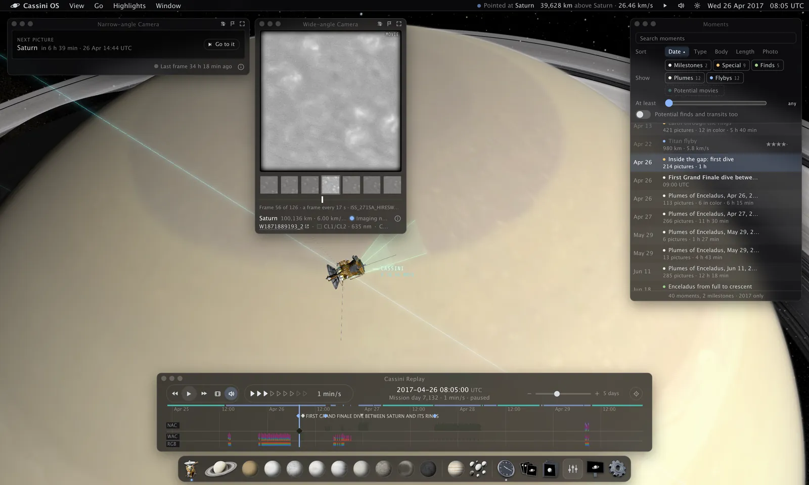
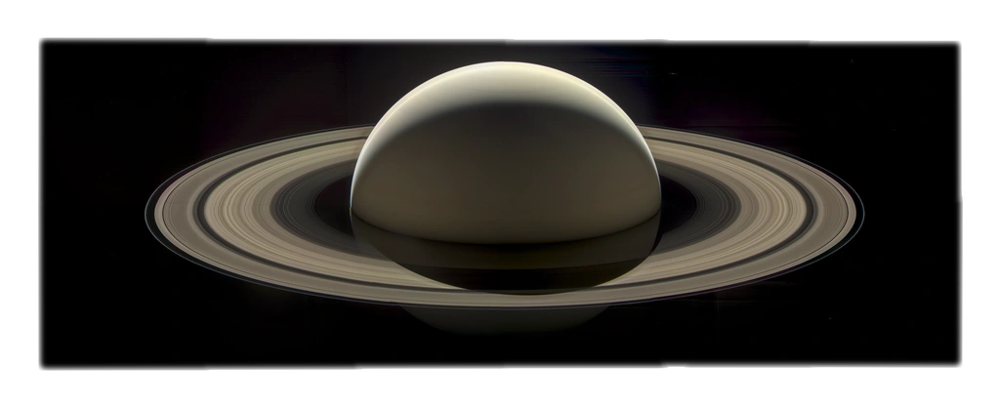
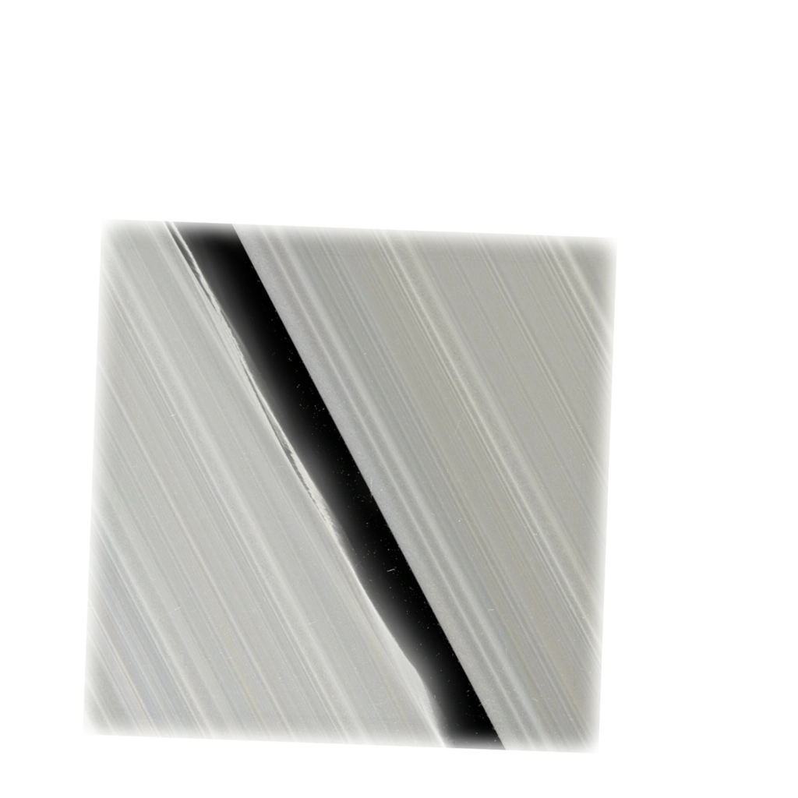
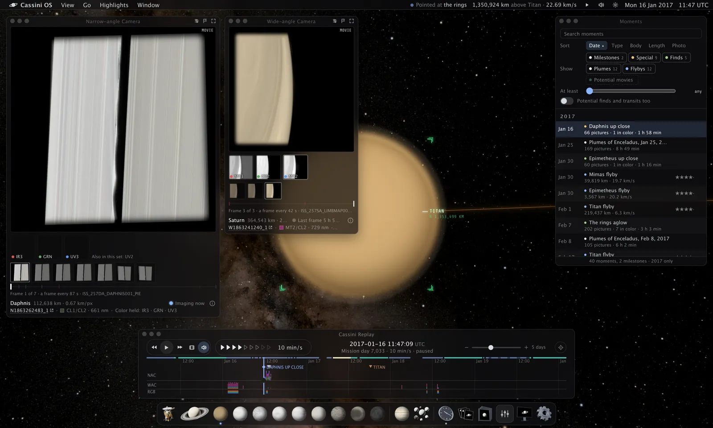

What it is
Ride along with Cassini, and see what it saw
Cassini OS follows NASA and ESA's Cassini-Huygens spacecraft from launch in October 1997, past Venus, Earth and Jupiter, through thirteen years in orbit around Saturn, to the Grand Finale plunge into Saturn's atmosphere on September 15, 2017. The spacecraft flies its real path and turns the way it really turned, from the mission's own navigation and pointing records.
It looks like a small desktop. The narrow-angle and wide-angle camera windows show the picture Cassini was taking at that moment, calibrated and cleaned up from the original frames. Pictures taken through red, green and blue filters become true color, tiles across a moon or the planet become mosaics, and runs of frames become movies.

- Camera windows. One for each camera, showing the real frame, its filters, and the color channels or movie frames around it.
- Moments. Hand-picked milestones, flybys, plumes, finds and transits, sorted by date, body or photo score.
- Timeline. Every picture of the mission on one strip, by camera, with a time warp from real time to a month a second.
- Dock. Saturn and every moon Cassini photographed, plus the gallery, studio and settings.
Sample outputs
Straight from the app
Every picture and film below came out of Cassini OS itself, from the same pipeline that draws the camera windows. Nothing was retouched afterward; a few bad frames were left out, the same way the app's Movie Editor leaves them out.



What you can do
Twenty years, at whatever speed you like
Play the mission in real time, or warp up to a month a second. The arrows step the speed, and the timeline jumps anywhere in twenty years.
Play the camera frames one after another as a film, at 2 to 24 frames a second, while the 3D view keeps up with the spacecraft.
Start from the milestones, the flybys, the plumes of Enceladus, the transits and the finds, each one a click away.
Pick Titan, Enceladus or any other moon in the dock to see only its pictures, across its whole history with Cassini.
Filter sets become true color pictures with their channels shown, and tiles are drawn into mosaics as Cassini takes them.
Hover over any picture to look closer, at the camera's full resolution.
Mark a stretch of the mission and export it as a video. Choose the frames in the Movie Editor and touch it up in the Studio.
Ride the probe down through Titan's haze on January 14, 2005, from entry glow to touchdown.
Leave it running on a spare screen: the camera drifts with Cassini and turns to whatever is most interesting nearby.
The address bar always holds the moment on screen, so a link opens on the same picture, from the same angle.
How the pictures are made
From raw frames, with nothing invented
- Raw framesEvery picture starts as an original frame from NASA's Planetary Data System, the archive where the mission team delivered its data.
- CalibrationEach frame is corrected for the camera's dark current, its flat field and its electronics, so each pixel's brightness matches the scene.
- NavigationThe spacecraft's position and pointing come from the mission's SPICE records, so each picture sits where the camera was really looking.
- Color, stacks and mosaicsFilter sets are aligned and combined into true color, repeat exposures are stacked, and tiles are stitched into mosaics.
Almost ready for launch
Cassini OS is free and runs in the browser. It isn't open yet: the last of the mission's pictures are still being processed.